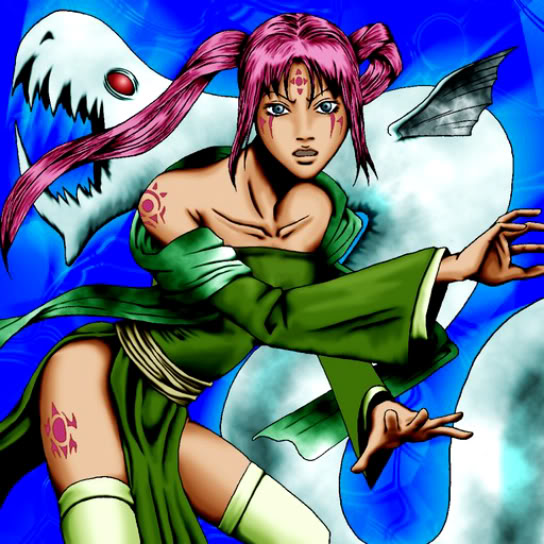

Waterdragon Fairy

STATS
ATK: 1100
DEF: 700DECK COST
Deck Cost per Card: 18Fusion List (31 Possible Fusions)
- Waterdragon Fairy + Air Marmot of Nefariousness = Nekogal #2
- Waterdragon Fairy + Ancient Jar = Mystical Sand
- Waterdragon Fairy + Arlownay = Queen of Autumn Leaves
- Waterdragon Fairy + Darkworld Thorns = Queen of Autumn Leaves
- Waterdragon Fairy + Dragon Statue = Spike Seadra
- Waterdragon Fairy + Enchanting Mermaid = Amazon of the Seas
- Waterdragon Fairy + Firegrass = Queen of Autumn Leaves
- Waterdragon Fairy + Fusionist = Nekogal #2
- Waterdragon Fairy + Griggle = Queen of Autumn Leaves
- Waterdragon Fairy + Happy Lover = Dark Witch
- Waterdragon Fairy + Hoshiningen = Dark Witch
- Waterdragon Fairy + Little Chimera = Nekogal #2
- Waterdragon Fairy + Lunar Queen Elzaim = Dark Witch
- Waterdragon Fairy + Man Eater = Queen of Autumn Leaves
- Waterdragon Fairy + Milus Radiant = Nekogal #2
- Waterdragon Fairy + Minomushi Warrior = Mystical Sand
- Waterdragon Fairy + Morphing Jar = Mystical Sand
- Waterdragon Fairy + Muka Muka = Mystical Sand
- Waterdragon Fairy + Mushroom Man = Queen of Autumn Leaves
- Waterdragon Fairy + Mystical Sheep #2 = Nekogal #2
- Waterdragon Fairy + Obese Marmot of Nefariousness = Nekogal #2
- Waterdragon Fairy + One-Eyed Shield Dragon = Spike Seadra
- Waterdragon Fairy + Pot the Trick = Mystical Sand
- Waterdragon Fairy + Prisman = Mystical Sand
- Waterdragon Fairy + Rainbow Flower = Queen of Autumn Leaves
- Waterdragon Fairy + Ray & Temperature = Dark Witch
- Waterdragon Fairy + Silver Fang = Nekogal #2
- Waterdragon Fairy + Tentacle Plant = Queen of Autumn Leaves
- Waterdragon Fairy + Wicked Dragon with the Ersatz Head = Spike Seadra
- Waterdragon Fairy + Wolf = Nekogal #2
- Waterdragon Fairy + Yashinoki = Queen of Autumn Leaves